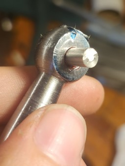

Stark Cross-Slide Restoration
Status: In Progress
7/15/2025
For a while now, I have owned a Hjorth bench precision lathe, but the slide it came with, originally from a Stark lathe, has always been the most miserable thing to work with. At some point in the past, somebody had welded filler where corners of the dovetail had broken off and the wear was so bad that getting the gibs tight on the ends of the travel would yield a half millimeter of play in the middle. Shockingly, the dials were in good condition, and the leadscrews have little to no play, and the castings are otherwise in decent shape, so I decided to do a restoration, or moreso, a resurrection.
I started by disassembling the slides. You can see here all of the different components, broken handwheel and the previous owner’s (quite successful) attempt at an engine-turned or jeweled finish, common on machines of this age. Unfortunately, its not particularly regular, and some of the imperfections in the castings were not taken care of before this finish was created, so it will have to be redone.
I started with the topmost block, where the toolpost would be mounted. From the previous owner’s mediocre repair, some JB-weld was left on the bottom of the dovetails to attempt to minimize the gap between the top and bottom slides. Unfortunately, this is not actually where dovetails should contact. This is my first time using a large insert facemill such as this one on my small Burke horizontal. Despite its size and general lack of rigidity without the overarm support, it actually fared extremely well with heavy cuts on this large diameter. I chamfered the corners by holding the part at a 45 degree angle in the vise. This wasnt something that I wanted to do, as it would certainly change the appearance of the slide, but the corners were so knackered that I really had no better choice. Besides, the t-slots have been repaired with steel plates and bolts in the past, so striving for originality is somewhat futile.
Next, I started on the leadscrews. I ground down the ball handles to allow the tapered pins that had been mushroomed over to come out, and knocked them out. In the vise, I tapped out the handwheels and also the micrometer dials, both of which were severely welded on (I didnt even know they were resettable!).
On the lathe, I polished the micrometer dials with Scotch-Brite, and also polished the one intact handwheel of the two. I did this between centers as I was not keen on trying to hold a ball in the chuck...
At the end, you can see the polished handwheel beside the unpolished.
The shaft with the broken handwheel was bent, and I tried with all my might (and a blowtorch) to bend it back, but to no avail. I decided to just turn the mating diameter down to something smaller and account for it in the replacement for the broken handwheel. I have noticed that this old steel lends itself very well to turning. I got a supreme finish. While I was at it, I also polished the other leadscrew also.
As for the broken handwheel’s replacement, measurements were taken off of it, and out of a ¾” piece of steel, I began turning a new handwheel. I turned each ball by hand with the carriage and cross slide, and switched to between-centers turning for the last operations. I really desperately need a ball turning attachment, maybe ill make one ;) A hole was drilled in the center of the ball handle and a flat was milled on the middle and smaller ball. Initially, I started drilling the smaller hole off center, and then had to touch it up on the mill. Also, ignore the hilariously long mismatched bolt holding the cutter to the toolpost, the grubscrew stripped and that was the only bolt of the same thread I had :D
Next, I took another scrap of steel and began work on the crank itself. It was a relatively straightforward job, and I finished it off by drilling a hole in the end.
A pin was machined out of what I believe was a shaft to a micrometer stand. Of course after cleaning with solvent, all components were Locktited together and allowed to dry for a few hours. You can see the two handwheels beside eachother on their respective shafts. Unless you look quite close, they are almost indestinguishable.

Lastly, a crosshole was drilled and tapped through to accept an M5 bolt, and the handwheel was fitted to the leadscrew.
As for the other leadscrew, the newly polished handwheel was re-pinned to the leadscrew, and the transition (and where I had ground material away) was cleaned up with Scotch-Brite.